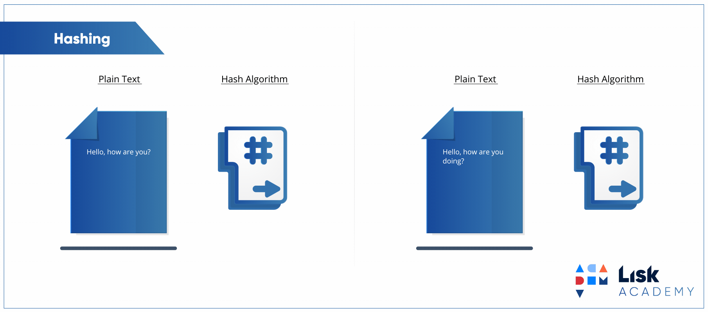
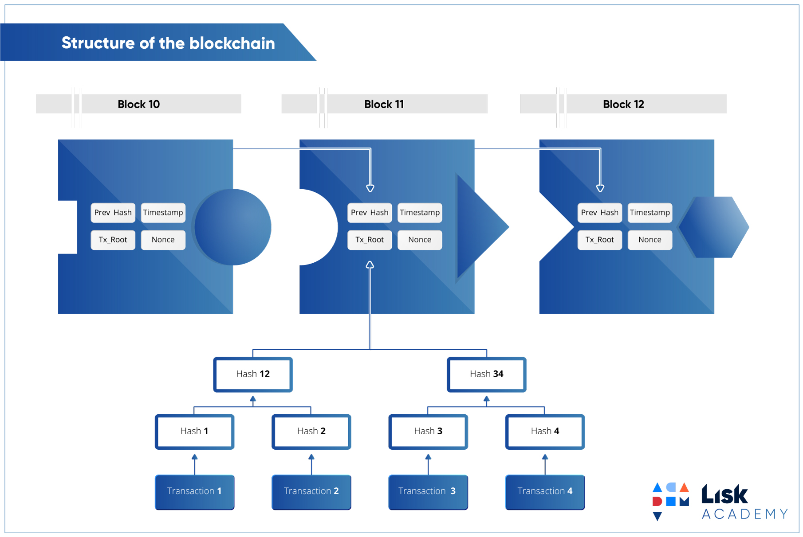

The reliability and integrity of blockchain is rooted in there being no chance of any fraudulent data or transactions, such as a double spend, being accepted or recorded. A cornerstone of the technology as a whole and the key components in maintaining this reliability is hashing.
Securing Data with Hashing
Hashing drastically increases the security of the data. Anyone who may be trying to decrypt the data by looking at the hash will not be able to work out the length of the encrypted information based on the hash. A cryptographic hash function needs to have several crucial qualities to be considered useful, these include:
Impossible to produce the same hash value for differing inputs:
This is important because if it were not the case it would be impossible to keep track of the authenticity of inputs.
The same message will always produce the same hash value:
The importance of this is similar to the prior point.
Even the slightest change to an input completely alters the hash:
This is also a matter of a security. If a slight change only made a slight difference it would be considerably easier to work out what the input was. The better and more complex the hashing algorithm, the larger the impact of changing an input will be on what the output is.

Hashing secures data by providing certainty that it has not been tampered with before being seen by the intended recipient. So, as an example, if you downloaded a file containing sensitive information, you could run it through a hashing algorithm, calculate the hash of that data and compare it to the one shown by whoever sent you the data. If the hashes do not match, you can be certain that the file was altered before you received it.
 